03. Conveyor, Buffer, เครื่องเสีย และ OEE
วัตถุประสงค์การเรียนรู้
- วาด Conveyor ทั้งช่วงตรงและโค้ง และแก้รูปทรง / ความยาวด้วย Show Manipulators และ Segments ได้
- แยกงานดี / งานเสียด้วย Exit แบบ Percentage และตั้งเวลาสุ่มแบบ Uniform ได้
- อ่าน WIP, CT และกราฟ Occupancy / Plotter ของ Buffer ได้
- ตั้งเครื่องเสียด้วย Availability และ MTTR อ่านแท็บ Statistics คำนวณ OEE และรู้ว่าต้องรันนานพอก่อนสรุป
03_Conveyor_Buffer_Failures_OEE.spp — บันทึกจาก Plant Simulation 2606 (เปิดในเวอร์ชันเก่ากว่าไม่ได้)
· เปิดไฟล์แล้วดับเบิลคลิก Frame ใน Class Library › Models
ต่อจากบท 02 — ไลน์เล็ก Station เดียว มีสายพานและที่พักงาน บทนี้เริ่มจากวาด Conveyor เอง แล้วเพิ่มเรื่องงานเสีย เวลาไม่คงที่ และเครื่องเสีย จนคำนวณ OEE ได้ ทั้งหมด 9 ขั้น ไม่ต้องเขียนโค้ด
03_Conveyor_Buffer_Failures_OEE.spp
(Class Library › Models › Model … Model5) · แยกงานดี/เสียด้วย Percentage 95 / 5 ได้ FG
180 → 341 ชิ้น/ชม. (ทุกตัวเลขในบทนี้วัดจริงใน Plant Simulation 2606 ด้วยไฟล์บทเรียนนี้ รันซ้ำได้ผลเท่าเดิม)
ภาพรวม: 9 ขั้น จากวาดสายพาน ถึง OEE
| ขั้น | หัวข้อ | ทำอะไร / ผล |
|---|---|---|
| 1 | วาด Conveyor | คลิกทีละจุด Ctrl + คลิก = โค้ง |
| 2 | วาง Buffer Station FG NG | แล้วต่อ Connector |
| 3 | ตั้ง Conveyor + รัน Model | FG 180 NG 179 |
| 4 | Exit แบบ Percentage | 95 / 5 ได้ FG 341 NG 18 |
| 5 | เวลาสุ่ม Uniform | Source 0:05–0:10 Station 0:04.6–0:10 |
| 6 | WIP, CT + Chart 2 แบบ | FG 447 NG 24 |
| 7 | เพิ่มเครื่องเสีย | Availability 90% MTTR 5:00 |
| 8 | Statistics + OEE | 1 กะ OEE ≈ 81% |
| 9 | รัน 30 วัน | เครื่องเสียนิ่งที่ 10% |
5 Frame ในไฟล์นี้ — ไลน์เดียวโตขึ้นทีละเรื่อง
| Frame | เรื่อง | ขั้น |
|---|---|---|
Model | Source → Conveyor → Buffer → Station → FG / NG ทุกอย่าง 0:10 ได้ FG 180 NG 179 | 1–3 |
Model2 | Exit แบบ Percentage 95 / 5 ได้ FG 341 NG 18 | 4 |
Model3 | เวลาสุ่ม สายพาน 0.2 m/s Chart ของ Buffer ได้ FG 447 NG 24 | 5–6 |
Model4 | กลับเป็น 0:10 เพิ่มเครื่องเสีย 1 กะ ได้ FG 2,330 | 7–8 |
Model5 | เหมือน Model4 รัน 30 วัน ได้ 306.5 FG/ชม. | 9 |
| บท 03 ในตัวเลข | ค่า |
|---|---|
| สายพาน | 8 เมตร |
| งานเสีย (NG) | 5% |
| Availability ของ Station | 90% |
| OEE 1 กะ | 81% |
Duplicate
แล้วแก้ทีละเรื่อง (วิธีสร้าง Frame อยู่ในบท 02)ขั้นที่ 1: เลือก Conveyor แล้วคลิกจุดเริ่ม
Toolbox › Material Flow › Conveyor
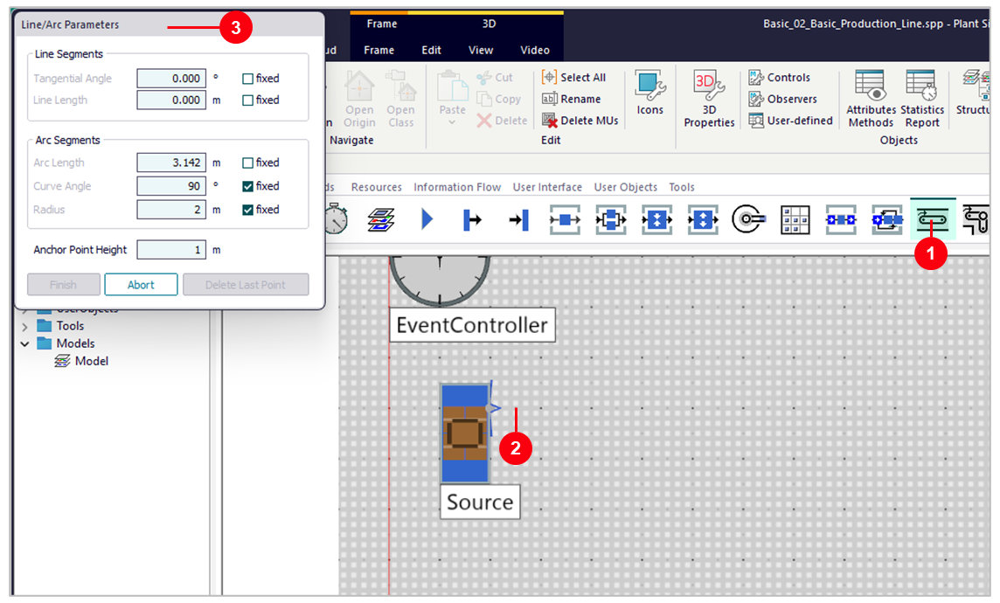
- 1Conveyor — คลิกไอคอนใน Toolbox แท็บ Material Flow
- 2คลิกจุดเริ่ม — ข้าง Source ตรงที่สายพานจะรับงาน
- 3Line/Arc Parameters — หน้าต่างนี้ขึ้นมาเอง บอกความยาวระหว่างวาด
Abort ถ้าวาดผิดขั้นที่ 1: คลิกจุดถัดไป ดูความยาวในช่อง Line Length
เลื่อนเมาส์ไปทางขวา ดูตัวเลขเมตร แล้วคลิก — ไม่ต้องพิมพ์ตัวเลข
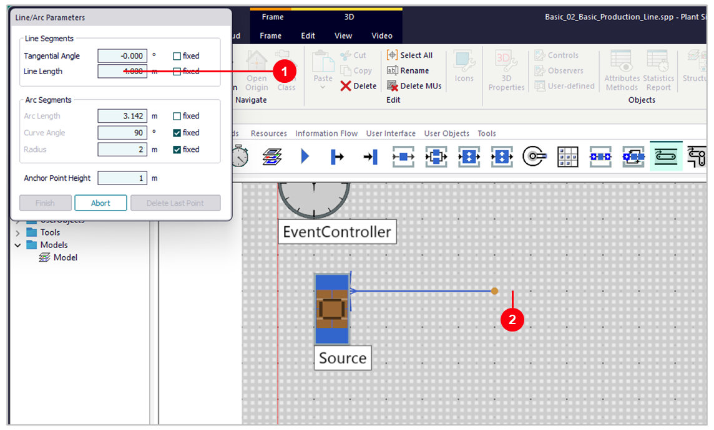
- 1Line Length = 4.000 m — ตัวเลขเปลี่ยนตามเมาส์ทันที
- 2คลิกจุดที่จะวาง — เมื่อตัวเลขได้ความยาวที่ต้องการ
ขั้นที่ 1: กด Ctrl ค้างแล้วคลิก ได้ทางโค้ง แล้วกด Finish
Ctrl + คลิก = โค้ง 90° · คลิก = ตรง · Finish = จบ
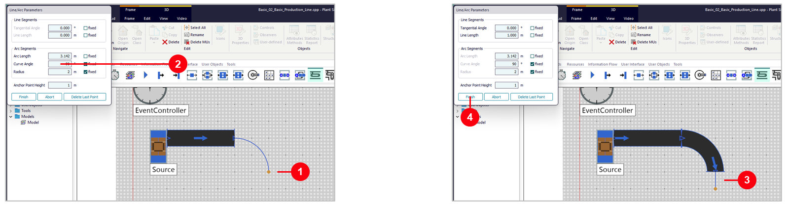
- 1กด Ctrl ค้าง แล้วคลิก — ได้ทางโค้ง 90° รัศมี 2 m
- 2Curve Angle 90, Radius 2 — ช่องหน้า fixed มีเครื่องหมายถูก ☑ = ใช้ค่านี้ทุกโค้ง
- 3ปล่อย Ctrl แล้วคลิก — สายพานตรงต่ออีก 1 m
- 4Finish — จบการวาด ได้ Conveyor ยาว 4 + 3.14 + 1 = 8.14 m
ขั้นที่ 1: แก้รูปทรงสายพานหลังวาด
คลิกขวาที่ Conveyor › Show Manipulators (M) แล้วลากจุด Anchor
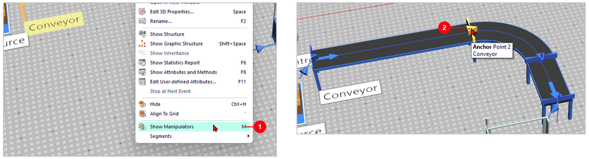
- 1คลิกขวาที่ Conveyor › Show Manipulators — หรือคลิกเลือกแล้วกด
M - 2Anchor Point — จุดหักของสายพาน (สีเหลือง) คลิกค้างแล้วลากไปวางที่ใหม่ ช่วงตรงและโค้งยืด / หดตาม
ขั้นที่ 1: เมนู Segments — แก้เป็นตัวเลข ต่อ กลับทิศ แยก
- 1Segments — ชี้ที่เมนูนี้ เมนูย่อยจะเปิดทางขวา
- 2Edit... (F7) — ตาราง Segments ของทุกช่วง แก้ Length (m), มุมโค้ง และรัศมีเป็นตัวเลข แทรกช่วงใหม่ได้ แล้วกด OK
- 3Append... — ต่อสายพานจากปลายเดิม คลิกจุดถัดไปเหมือนตอนวาด
- 4Reverse — กลับทิศทางการไหล จุดสุดท้ายกลายเป็นจุดแรก
- 5Split Up — แยกสายพานเป็นคนละชิ้น ตรงจุดที่คลิกเลือก
Edit... › แถวช่วงนั้น › Length = 5 › OK ช่วงที่ตามมาเลื่อนไปเองขั้นที่ 2: วาง Buffer, Station, Drain 2 ตัว แล้วต่อ Connector
Frame Model · ผังของไลน์ — วาง Object และต่อ Connector แบบเดียวกับบท 01
ชื่อ Drain เปลี่ยนเป็น FG และ NG (คลิกขวา › Rename หรือ F2)
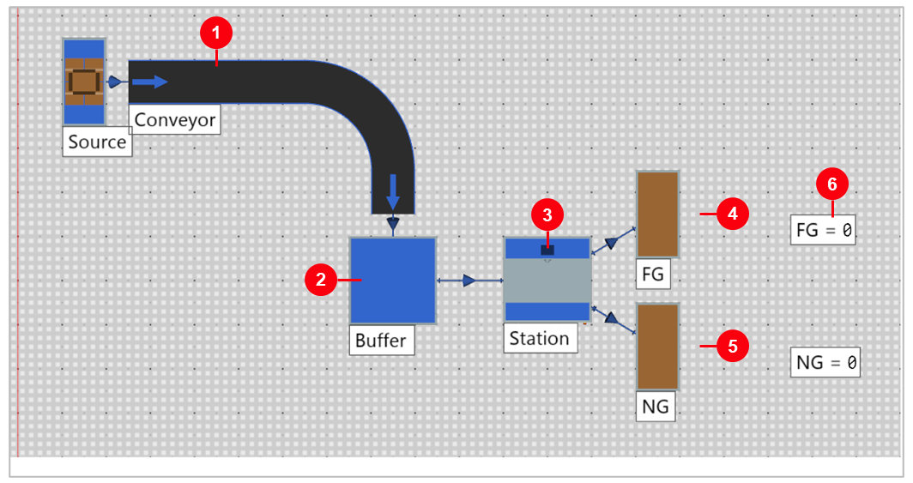
- 1Conveyor — ต่อจาก Source รับงานเข้าสายพาน
- 2Buffer — ที่พักงานก่อนเข้าเครื่อง (ความจุ 8 ชิ้น ค่าเริ่มต้น)
- 3Station — เครื่องเดียว 0:10 ต่อชิ้น
- 4FG — Drain รับงานดี (ต่อเป็นเส้นแรกจาก Station)
- 5NG — Drain รับงานเสีย (เส้นที่ 2)
- 6Display FG / NG — นับจำนวนที่เข้า Drain (วิธีวางอยู่ในบท 02)
ขั้นที่ 3: ตั้งค่า Conveyor และ Buffer
ดับเบิลคลิก Conveyor (ซ้าย) · ดับเบิลคลิก Buffer (ขวา)
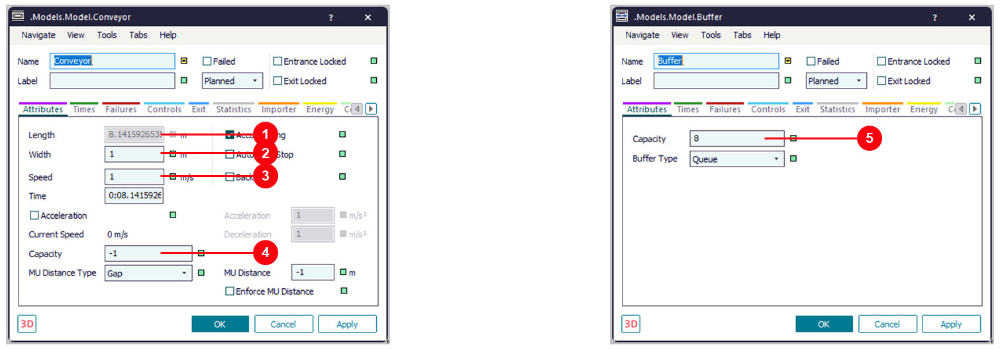
- 1Length 8.14 m — มาจากที่วาด แก้ในช่องนี้ไม่ได้
- 2Width 1 m — ความกว้างสายพาน
- 3Speed 1 m/s — ความเร็ว (Model3 ลดเหลือ 0.2)
- 4Capacity -1 — = รับได้เต็มความยาวสายพาน
- 5Buffer Capacity 8 — พักงานได้ 8 ชิ้น
ขั้นที่ 3: เปลี่ยนรูปสายพานใน 3D เป็นแบบ Roller
มุมมอง 3D › คลิกขวาที่ Conveyor › Edit 3D Properties... › แท็บ Appearance
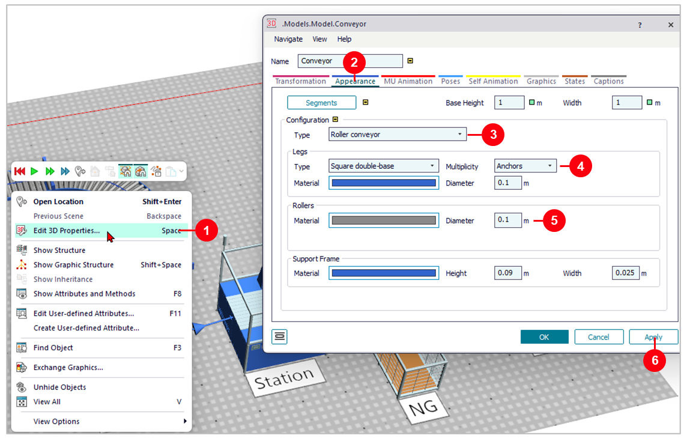
- 1Edit 3D Properties... — หรือคลิกเลือกแล้วกด
Space - 2แท็บ Appearance
- 3Type = Roller conveyor — เลือกรูปแบบสายพานจากรายการ
- 4Legs — ขาตั้ง: รูปแบบ สี และขนาด
- 5Rollers · Support Frame — สีและขนาดลูกกลิ้ง และโครงข้าง
- 6Apply แล้ว OK
ขั้นที่ 3: Model — งานดีกับงานเสียได้เท่ากัน
Frame Model · ผลหลังรัน 1 ชั่วโมง
- 1Source, Station 0:10 — Exit เป็นค่าเริ่มต้น Cyclic = ส่งสลับเส้น
- 2FG = 180
- 3NG = 179 — งานเสียเกือบครึ่งหนึ่ง ไม่ตรงกับโรงงานจริง
ขั้นที่ 4: แยกงานดี / งานเสียด้วย Percentage
Frame Model2 › ดับเบิลคลิก Station › แท็บ Exit
- 1แท็บ Exit
- 2Strategy = Percentage — เลือกจากรายการ
- 3Blocking — ไม่มีเครื่องหมายถูก ☐ = ถ้าปลายทางเต็ม ส่งไปทางอื่นได้
- 4Open List — ใส่ 95 ในแถว 1 (FG) และ 5 ในแถว 2 (NG) แล้วกด Apply / OK
Station.ExitStrategy := "Percentage" และ Station.ExitStrategyPercentageValues := [95, 5]ขั้นที่ 4: Model2 — งานเสีย 5% ตามที่ตั้ง
Frame Model2 · ผลหลังรัน 1 ชั่วโมง
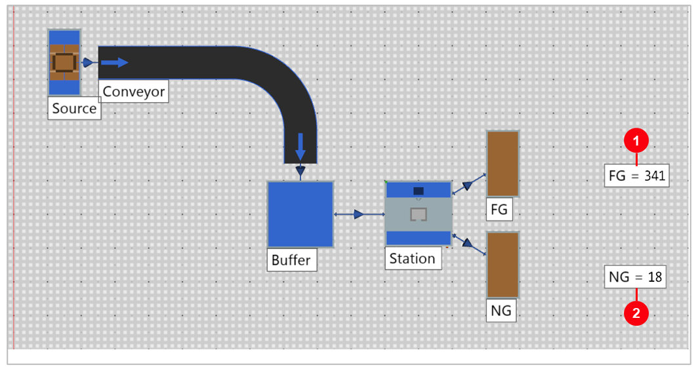
- 1FG = 341
- 2NG = 18 — 18 ÷ 359 = 5.0%
ขั้นที่ 5: เวลาไม่คงที่ด้วย Uniform
Frame Model3 · ดับเบิลคลิก Source (ซ้าย) · Station (ขวา) — เลือก Uniform จากรายการแล้วพิมพ์ 0:05, 0:10 กด Apply
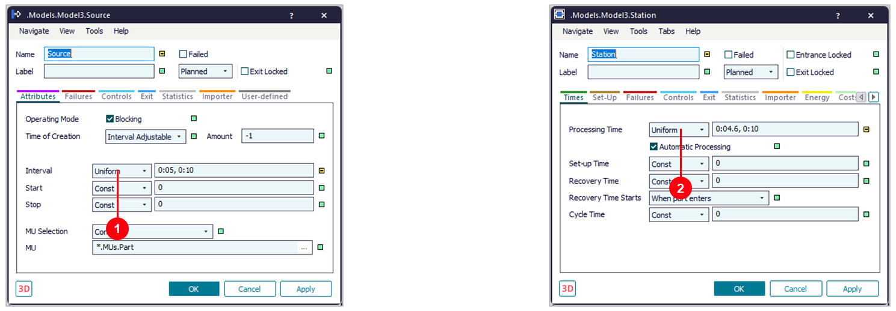
- 1Source › Interval — Uniform 0:05, 0:10 = งานเข้าทุก 5–10 วินาที
- 2Station › Processing Time — Uniform 0:04.6, 0:10 = ทำงาน 4.6–10 วินาทีต่อชิ้น
ขั้นที่ 5: สายพานช้าลง และ Display WIP / CT
Frame Model3 · Conveyor (ซ้าย) · DisplayWIP (ขวา) — วาง Display จาก Toolbox › User Interface แล้วกรอก Path และ Comment ในแท็บ Data
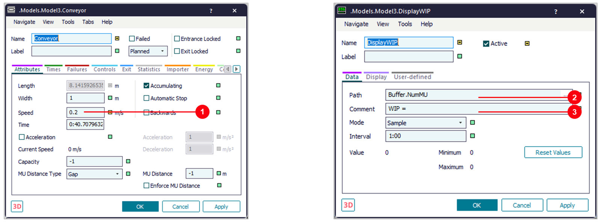
- 1Conveyor Speed = 0.2 m/s — ชิ้นงานใช้เวลาบนสายพาน 8.14 ÷ 0.2 ≈ 41 วินาที
- 2Path = Buffer.NumMU — WIP = จำนวนชิ้นที่รออยู่ใน Buffer ตอนนี้
- 3Comment = WIP = — ข้อความหน้าตัวเลข · Display CT ใช้ Path =
Station.ProcTime(เวลาทำงานชิ้นล่าสุด)
ขั้นที่ 6: Model3 — อ่าน WIP, CT, FG และ NG
Frame Model3 · ผลหลังรัน 1 ชั่วโมง
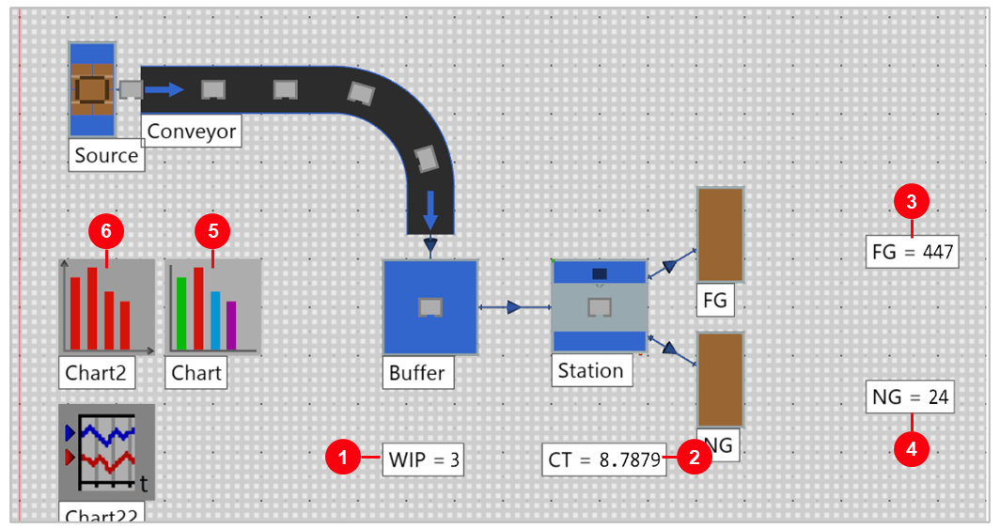
- 1WIP = 3 — ชิ้นที่รอใน Buffer ตอนจบ
- 2CT = 8.79 — เวลาทำงานของชิ้นล่าสุด (วินาที)
- 3FG = 447
- 4NG = 24
- 5Chart — กราฟสถานะของ Station
- 6Chart2 — กราฟจำนวนชิ้นใน Buffer
ขั้นที่ 6: Chart — Station ทำงานเกือบตลอดเวลา
Frame Model3 › ดับเบิลคลิก Chart (หลังรัน)
- 1สีเขียว Working 95.7% — Station ทำงาน
- 2สีเทา Waiting 4.3% — รองาน เมื่อ Source สุ่มได้ช่วงห่าง
- 3ไม่มีสีเหลือง — Station ไม่เคยถูกบล็อก เพราะ FG / NG รับได้ตลอด
Toolbox › User Interface › Chart แล้วลาก Station ไปวางบน Chart (เหมือนบท 02)ขั้นที่ 6: Chart2 ดู Buffer — ลาก Buffer ไปวาง เลือก Occupancy
Toolbox › User Interface › Chart แล้วลาก Buffer ไปวางบน Chart2 ที่ยังไม่ได้ตั้งค่า
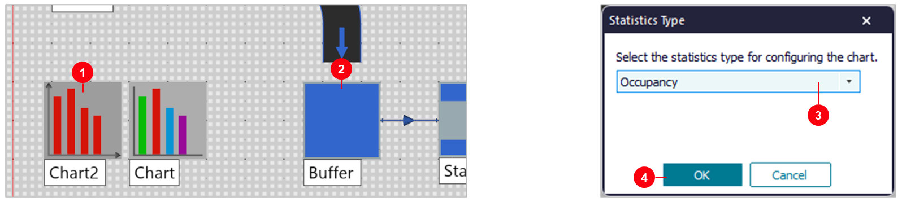
- 1Chart2 — วาง Chart อีกตัวจาก Toolbox › User Interface
- 2ลาก Buffer ไปปล่อยบน Chart2 — คลิกค้างที่ Buffer แล้วลากไปวาง
- 3Statistics Type = Occupancy — Buffer ขึ้นค่านี้ให้เอง = นับว่ามีงานอยู่กี่ชิ้น
- 4OK
ขั้นที่ 6: อ่านกราฟ Occupancy ของ Buffer
Frame Model3 › ดับเบิลคลิก Chart2 (หลังรัน 1 ชั่วโมง)
- 1แกนนอน Number of MUs — จำนวนชิ้นใน Buffer: 0, 1, 2, …
- 2แกนตั้ง Time Portion (%) — % ของเวลาที่ Buffer มีจำนวนชิ้นเท่านั้น
- 3แท่ง 0 ≈ 41% — Buffer ว่างเกือบครึ่งหนึ่งของเวลา · 1 ชิ้น ≈ 28% · 2 ชิ้น ≈ 18% · 3 ชิ้น ≈ 10%
- 4ไม่เกิน 5 ชิ้น — ทั้งที่ Buffer จุได้ 8 ชิ้น ที่ที่เหลือไม่เคยถูกใช้
ขั้นที่ 6: Copy Chart2 แล้วตั้งเป็น Plotter
คลิก Chart2 › Ctrl+C แล้ว Ctrl+V ได้ Chart22 › ดับเบิลคลิก Chart22
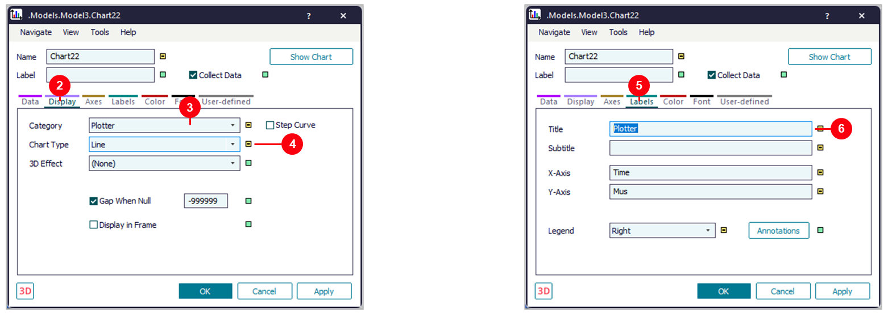
- 1Copy / Paste Chart2 — ได้ Chart22 ที่ยังดู Buffer.numMU เหมือนเดิม
- 2แท็บ Display
- 3Category = Plotter — กราฟเส้นตามเวลา
- 4Chart Type = Line
- 5แท็บ Labels
- 6Title = Plotter — X-Axis = Time · Y-Axis = Mus (ชื่อแกน)
ขั้นที่ 6: อ่านกราฟ Plotter — จำนวนชิ้นใน Buffer ตามเวลา
Frame Model3 › ดับเบิลคลิก Chart22 (หลังรัน 1 ชั่วโมง)
- 1แกนนอน Time — เวลาจำลอง 0 ถึง 1:00:00
- 2แกนตั้ง — จำนวนชิ้นใน Buffer ณ เวลานั้น
- 3นาทีที่ 55–60 — งานสะสมถึง 4–5 ชิ้น = Station สุ่มได้เวลานานหลายชิ้นติดกัน
- 4ช่วง 0–1 ชิ้น — Station ตามทันงานที่เข้ามา
ขั้นที่ 7: เพิ่มเครื่องเสียให้ Station
Frame Model4 › ดับเบิลคลิก Station › แท็บ Failures
- 1แท็บ Failures
- 2Active — ช่องหน้าชื่อมีเครื่องหมายถูก ☑ = เปิดให้เครื่องเสียได้
- 3Availability 90% — เครื่องพร้อมทำงาน 90% ของเวลา
- 4MTTR 5:00 — ซ่อมเฉลี่ยครั้งละ 5 นาที
ขั้นที่ 7: Model4 — 1 กะ ได้ FG 2,330
Frame Model4 · ผลหลังรัน 8 ชั่วโมง
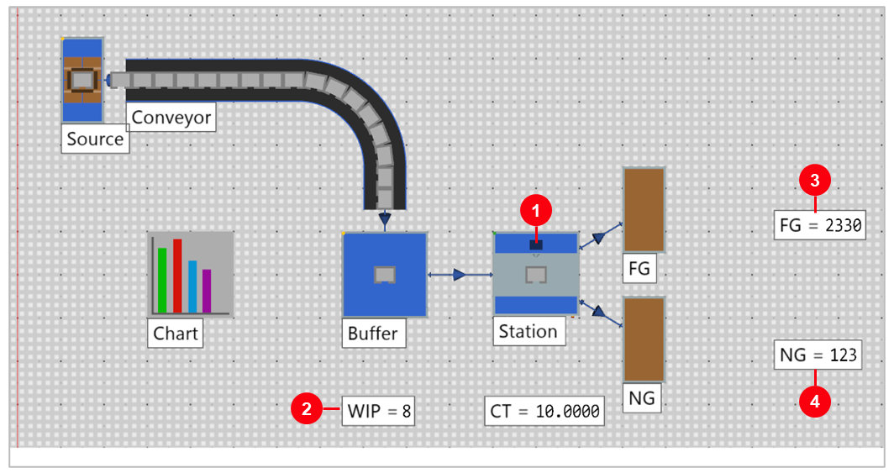
- 1Station — เสีย 14.7% ของเวลา
- 2WIP = 8 — Buffer เต็ม งานค้างบนสายพานด้วย
- 3FG = 2,330
- 4NG = 123
ขั้นที่ 8: อ่านตัวเลขในแท็บ Statistics
Frame Model4 › ดับเบิลคลิก Station › แท็บ Statistics (หลังรัน)
- 1แท็บ Statistics
- 2Working 85.20% — เวลาที่เครื่องทำงานจริง
- 3Failed 14.65% — เวลาที่เครื่องเสีย
- 4Exits 2,453 — ชิ้นที่ออกจากเครื่อง = FG + NG
ขั้นที่ 8: คำนวณ OEE จากสถิติ
OEE = A × P × Q · Model4 1 กะ
| ตัว | ความหมาย | ค่า | มาจาก |
|---|---|---|---|
| Availability (A) | เวลาพร้อมทำงาน ÷ เวลาทั้งหมด | 85.4% | 100% − Failed 14.65% |
| Performance (P) | ชิ้นที่ทำได้ ÷ ชิ้นที่ควรทำได้ในเวลาที่พร้อม | ≈ 100% | 2,453 ÷ (2,880 × 85.4%) |
| Quality (Q) | งานดี ÷ งานทั้งหมด | 95.0% | FG 2,330 ÷ 2,453 |
| OEE | A × P × Q | ≈ 81% | ตรวจ: FG 2,330 ÷ เต็ม 2,880 = 80.9% |
ขั้นที่ 9: Model5 — รัน 30 วัน ค่าจึงนิ่ง
Frame Model5 › ดับเบิลคลิก Station › แท็บ Statistics
- 1Working 89.6%
- 2Failed 10.4% — ใกล้ 10% ที่ตั้ง (Availability 90%)
30:00:00:00 (30 วัน) รันแบบไม่มีภาพเคลื่อนไหวใช้เวลาไม่กี่วินาที
· ผล 720 ชั่วโมง: FG 220,650 NG 11,613 = 306.5 FG ต่อชั่วโมงขั้นที่ 9: รันสั้น vs รันยาว (Station Availability 90%)
| Frame | เวลาที่รัน | Failed | FG / ชม. | OEE | อ่านว่า |
|---|---|---|---|---|---|
Model4 | 8 ชม. | 14.7% | 291.2 | ≈ 81% | เครื่องเสียมากกว่าที่ตั้ง เพราะสุ่มได้ไม่กี่ครั้ง |
Model5 | 30 วัน | 10.4% | 306.5 | ≈ 85% | ใกล้ค่าที่ตั้ง ใช้ตัดสินใจได้ |
สรุป 5 Frame (Plant Simulation 2606)
| Frame | สิ่งที่ต่าง | เวลาที่รัน | FG | NG | ดู |
|---|---|---|---|---|---|
| Model | Source / Station 0:10 · Exit Cyclic | 1 ชม. | 180 | 179 | ขั้น 1–3 |
| Model2 | Exit Percentage 95 / 5 | 1 ชม. | 341 | 18 | ขั้น 4 |
| Model3 | Uniform (Source 0:05–0:10, Station 0:04.6–0:10) · 0.2 m/s · Chart, Chart2 | 1 ชม. | 447 | 24 | ขั้น 5–6 |
| Model4 | 0:10 + เครื่องเสีย 90% / 5:00 | 8 ชม. | 2,330 | 123 | ขั้น 7–8 |
| Model5 | Model4 รันนาน | 30 วัน | 220,650 | 11,613 | ขั้น 9 |
ลองเอง: เปลี่ยนค่าแล้วดูผล
| ลองเปลี่ยน | ผลหลังรัน | ทำไม |
|---|---|---|
| Model2 › Percentage 90 / 10 | FG 323 · NG 36 | งานเสียเพิ่มเป็น 10% ตามที่ตั้ง |
| Model3 › Buffer Capacity 1 หรือ 20 | FG 447 เท่าเดิม | สายพาน 8 m ที่วิ่งช้าก็เป็นที่พักงานอยู่แล้ว |
| Model3 › Conveyor Speed 1 m/s | FG 452 · NG 24 | สายพานไม่ใช่คอขวด เร็วขึ้นแทบไม่ช่วย |
| Model4 › MTTR 0:30 | FG 2,448 (8 ชม.) | เสียบ่อยแต่ซ่อมเร็ว เสียรวมเหลือ 10.4% |
| Model5 › Availability 95 | 324.5 FG / ชม. | เครื่องเสีย 5.1% |
| Model5 › Availability 80 | 273.1 FG / ชม. | เครื่องเสีย 20.1% |
ปัญหาที่พบบ่อย และวิธีแก้
| อาการ | วิธีแก้ |
|---|---|
| วาด Conveyor แล้วได้เส้นตรงอย่างเดียว | กด Ctrl ค้างไว้ระหว่างคลิกจุดที่ต้องการโค้ง |
| Conveyor ยาวไม่ตรงที่ต้องการ | ดูช่อง Line Length ระหว่างเลื่อนเมาส์ก่อนคลิก หรือกด Delete Last Point แล้วคลิกใหม่ |
| FG / NG ได้ครึ่งต่อครึ่ง | Station › Exit › Strategy ยังเป็น Cyclic ให้เปลี่ยนเป็น Percentage |
| งานดีไปเข้า NG | ลำดับในรายการตามลำดับ Connector: เส้นแรกต้องต่อไป FG |
| Display แสดง 0 ตลอด | ตรวจ Path ในแท็บ Data เช่น Buffer.NumMU และกด Start แล้ว |
| ตั้ง Availability แล้วเครื่องไม่เสีย | แท็บ Failures › ช่อง Active ต้องมีเครื่องหมายถูก ☑ ทั้งช่องบนและในตาราง |
| หาปุ่ม OEE ไม่เจอ | ไม่มี ให้คำนวณจากแท็บ Statistics: A × P × Q |